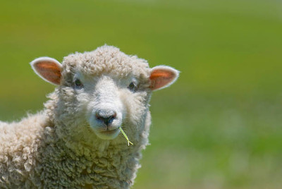
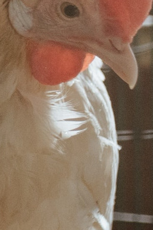
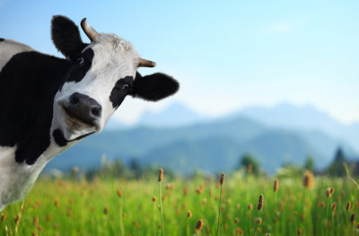

FAQs
- Where is Abington Farm Visitor Centre? - We are located just outside Abington, Biggar. You can get to us by taking the M74, and coming off at Abington Services. See the Map below for our exact location.
- Is there parking? - We have a main car park and an overflow car park. We also have Parking for Disabled Driver.
- Do you accept dogs? - No, with the exception of assistance dogs. All assistance dogs should wear their respective identifying jackets. The nearby Abington Kennels do offer a day service for owners that wish to visit Abington Farm. Day Fee is £10.00 per animal. For more information visit their Site, or phone them on 01864 502 503.
- What age group do you cater for? - Abington Farm is suitable for all age groups. It is a fully interactive fun experience with sight, sound and smells of the countryside. We also cater for Playgroups, School groups, Birthday Parties and specialist groups – the possibilities are endless! If you are unsure about the suitability for a group visit please give us a ring. Please note: children under 16 years of age must be accompanied by an adult of 16 years old or above.
- How long will a visit last? - Our farm will suit anyone, from those stopping for a coffee & a cake, through to those here for the entire day. However, our visitors usually remain with us for at least two hours.
- Is it safe and suitable for people with disabilities? - Hazard & Risk Assessments have been carried out. Abington Farm features disabled access throughout the park, but visitors should be aware that some pathways are grassed over. For people with mobility problems, please ask about using our Golf Buggies.
- What if it rains? - There is an indoor section to the Petting Zoo, within a large barn. Please see the Activities page for more details.
- How do we book and pay? - We only require advanced bookings if your group size is over 10, and payment is only for the petting zoo. Our adventure playpark and forest trails are free to use. For Seasonal Activites, see the relevant article page.
- What animals do you have? - Sheep, Goats, Pigs, Highland Cows, Deer, Donkeys, Horses, Chickens, Ducks, Turkeys, Rhea, Peacocks, Guinea Pigs, Rabbits, Wallabies AND our very cheeky Llamas!
- Can you feed the animals? - Yes! Our animals are very friendly and will come up to meet you for a snack and a head scratch! Animal food costs 50p per cup, and is suitable for all our large animals. Animals can only be fed with the animal feed provided on the farm. Food which is not part of their normal diet can cause upset tummies and even be dangerous to animals. Do not bring your own food for the animals.
- Can you bring a picnic? - Yes! Picnics are welcome. There are plenty of picnic benches too, both indoors and indoors.
- What age group is Abington Farm best for? - All ages! Our activities are best suited to kids between ages 2 - 12, however we also get many children younger and older than this who tell us they've had a brilliant time. Everything in the farm is designed to be enjoyed by adults too, so that children can experience playing and learning with their parents!
- Can you bring a buggy? - Yes you can bring buggy's to the farm. You are also able to pop in and out to the car park if wish to put your buggy away.
- Can you pay with card/cash? - The reception, shop and cafe all accept both card and cash.
- What shoes should you wear? Footwear? - The park is paved and gravel paths so any trainers or boots are fine. Perhaps wellies for wet day for any puddles! We would NOT recommend heels, sandals, dress shoes, or any footwear or clothing that you would like to keep nice.